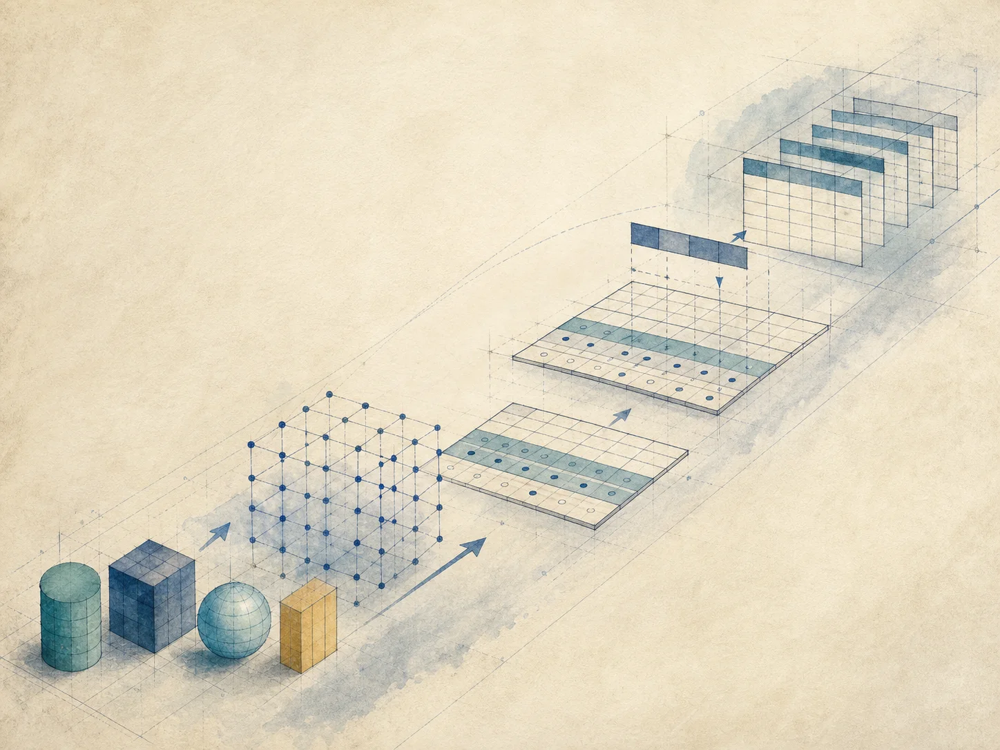
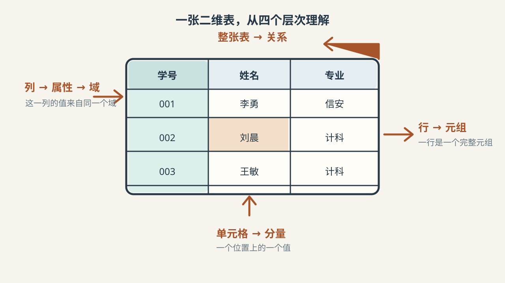
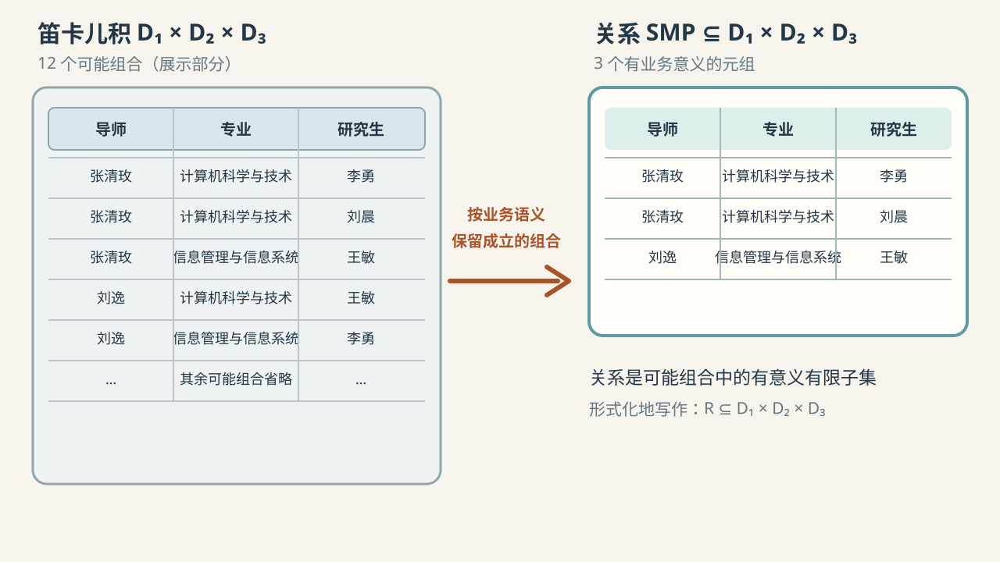
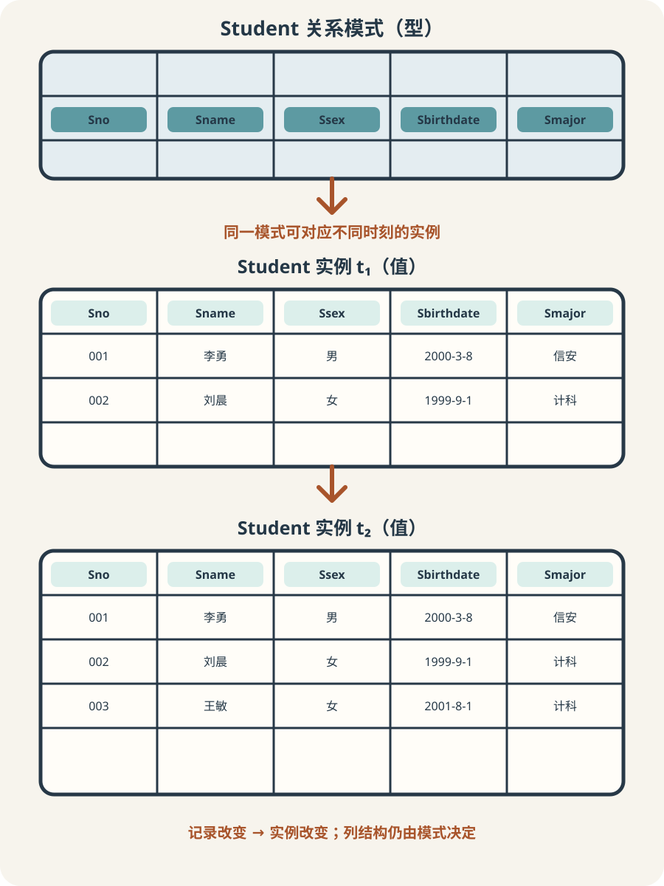

三张表的形状相同
Student、Course 和 SC 都由有名称的列和一行行记录组成

把二维表还原为属性、元组、域与关系
 VER. 2608
Built with impress.js
VER. 2608
Built with impress.js
从二维表开始理解关系，检查关系性质，并区分模式与实例
列、行和单元格分别对应属性、元组和分量；整张表对应一个关系

Student、Course 和 SC 都由有名称的列和一行行记录组成
Student 记录学生，Course 记录课程，SC 记录选课
基本关系、查询结果和视图都由属性与元组组成，可以继续参与关系操作
域是一组具有相同数据类型的值的集合
{张清玫，刘逸}
{计算机科学与技术，信息管理与信息系统}
{李勇，刘晨，王敏}
“导师”与“研究生”都可以取自 PERSON 域，但必须用不同属性名
域说明属性允许取哪些值，属性名说明这些值在业务中的角色
域的基数统计允许值的个数；笛卡儿积的基数统计所有可能元组的个数
笛卡儿积的基数 \(M\) 表示可能组合数，关系的基数 \(\lvert R\rvert\) 表示实际元组数
用表格区分笛卡儿积中的形式化概念及其例子
| 概念 | 形式化含义 | 导师-专业-研究生例子 |
|---|---|---|
| \(n\) | 参与组合的域的个数 | \(n=3\) |
| 元组 | 笛卡儿积中的一个元素 | （张清玫，计算机科学与技术，李勇） |
| 分量 | 元组中的一个值 | 张清玫或李勇 |
| 域的基数 | 一个域允许的不同取值个数 | \(D_1=2\)，\(D_2=2\)，\(D_3=3\) |
| \(M\) | 域基数的乘积，可能元组数 | \(M=2\times2\times3=12\) |
| \(\lvert R\rvert\) | 实际保留的元组数 | 由业务语义决定，且 \(\lvert R\rvert\le M\) |
三个域产生 12 个可能组合，实际只有 3 个导师-专业-研究生组合成立

所有可能组合 → 按业务语义筛选 → 有意义的关系
关系是给定域的笛卡儿积的子集：\(R \subseteq D_1 \times D_2 \times \cdots \times D_n\)
关系 \(\mathrm{SMP}\subseteq D_1\times D_2\times D_3\)
关系的度 \(\operatorname{deg}(\mathrm{SMP})=3\)
关系的基数 \(\lvert\mathrm{SMP}\rvert=3\)
“导师指导研究生”关系只保留确实存在的导师、专业和研究生组合
先确认它是有限的元组集合，再逐项检查列、行、码和分量
| 编号 | 基本性质 | 课堂判断 |
|---|---|---|
| 1 | 列同质 | 每列分量来自同一个域 |
| 2 | 同域列仍须有不同属性名 | 即使多个属性同属一个域，也要区分列名 |
| 3 | 列序无关 | 调换列顺序不改变关系 |
| 4 | 任意两个元组的码不能相同 | 不能用相同码值识别两行 |
| 5 | 行序无关 | 调换行顺序不改变关系 |
| 6 | 分量必须是原子值 | 一个单元格不能再装一个小表 |
每个分量只包含一个在当前关系模式中不可再分的数据项
| 不符合基本要求 | 符合基本要求 |
|---|---|
| 订单商品：商品 A、商品 B | 订单项分别保存商品 A 与商品 B |
| 一格中包含多个值 | 每个分量只有一个不可再分的值 |
| 查询和更新需要拆解字符串 | 分量在当前关系模式中是一个处理对象 |
分量不能再包含一个关系或一组并列值；现实对象可以很复杂，只要在当前关系模式中作为一个值处理即可
区别在于数据是独立保存、查询时临时产生，还是只保存一个视图定义
实际存在并独立保存的表，如Student，是基础数据的逻辑表示
查询执行后产生的临时关系，如可供显示或后续处理的某班成绩列表
由基本表或其他视图导出的虚关系，如学生成绩视图
先问数据从哪里来、是否独立保存，再判断关系类型
简写先列关系名与属性，完整形式再补域映射和数据依赖
课堂中常用 \(R(A_1,A_2,\ldots,A_n)\) 书写关系名和属性
需要精确说明属性来自哪个域、属性间有哪些数据依赖时，再展开完整形式
\(R(D1,…,Dn)\) 强调关系和域；\(R(U,D,DOM,F)\) 描述关系模式
关系模式的组成部分Student 中的对应
| 符号 | 准确定义 | Student 中的对应 |
|---|---|---|
| \(R\) | 关系模式名（关系名） | Student |
| \(U\) | 属性名集合 | Sno, Sname, Ssex, Sbirthdate, Smajor |
| \(D\) | 属性所属的域集合 | 学号域、姓名域、性别域等 |
| \(DOM\) | 属性到域的映像 | \(DOM(Sno)\) = 学号域 |
| \(F\) | 属性间数据依赖关系的集合 | 由关系模式表示的属性依赖 |
候选码先由唯一性和最小性确定，主码再从候选码中选定
某属性或属性组能够唯一标识元组，且该属性组的任何真子集都不能
从候选码中选定一个，作为关系元组的主要标识。由 DBA 选定
属于任一候选码的属性叫主属性；不属于任何候选码的属性，叫非主属性
若允许重修、跨学期重复或多个教学班，候选码会是什么？
以 Enrollment 为例，逐项检查单属性和属性组是否满足候选码条件
| 候选标识 | 唯一性 | 最小性 | 结论 |
|---|---|---|---|
Sno | 否：同一学生可修多门课 | — | 不能作为候选码 |
Cno | 否：同一课程可有多名学生 | — | 不能作为候选码 |
(Sno, Cno) | 是：同一学生同一课程只登记一次 | 是：任一单属性均不唯一 | 候选码；可以选为主码 |
关系模式列出属性、域和规则，关系实例是此刻保存在这些属性下的一组记录

列出属性名称、取值域和规则，不包含某个时刻的具体学生记录
Student(Sno, Sname, Ssex, Sbirthdate, Smajor)
某一时刻的学生记录集合
新增、删除或修改记录都会改变实例
关系模式是型，关系实例是值
关系模式集合描述结构，某一时刻的关系集合描述数据库值
上式表示某一时刻的学生选课关系数据库值
| 层次 | 描述 | 学生选课例子 |
|---|---|---|
| 关系数据库模式 | 所有关系模式的集合 | Student、Course、SC表 |
| 关系数据库值 | 某一时刻对应关系的集合 | 某学年某时刻的三组记录 |
关系型数据管理系统（RDBMS）是管理这些模式和值的 DBMS
用户用关系语言表达数据，RDBMS 负责内部存储
关系、关系模式和关系语言描述用户能够理解的逻辑结构与操作
RDBMS 选择并组织文件、页、索引等内部存储结构；具体实现可以不同
同一逻辑关系可采用不同的内部存储组织
任选订单项表或玩家对局表，不看前页结论，完成下面三项检查
指出属性、元组和分量，计算关系的度与基数，并说明每个属性来自什么域
检查六条基本性质，根据来源和保存方式判断它是基本关系、查询结果还是视图
写出关系模式和候选码前提，说明实例、数据库与 RDBMS 物理存储各处在哪一层
为什么当前样例中没有重复，仍不足以证明某组属性是候选码？